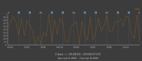
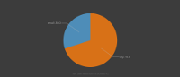
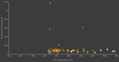
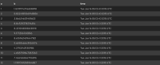
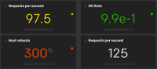
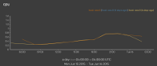

view
The view sink syntax includes the keyword view followed by a particular view name.
... | view <view> [view-parameters]
The built-in views available in the Juttle CLI are view table and view text.
The juttle-viz package provides a variety of customizable charts for output in the browser, see below.
If your program doesn't specify an output, the default is view table.
A program can have multiple view sinks; their visual layout will depend on the visualization solution.
CLI Views
Display the output as text in rows and columns. This is the default output if no other is specified.
Display a raw dump of the output in a fixed-width, console-style font.
Browser Charts
These charts are supplied by the juttle-viz charting library which seamlessly integrates with Juttle.
To use these charts, follow installation instructions for juttle-viz, or try out the integrated Juttle analytics environment outrigger.
| Sink | Description | Image |
|---|---|---|
| barchart | Display the output as vertical or horizontal bars for comparing different categories of data. |  |
| events | Overlay events on top of a time chart, with a tooltip whose format can be customized. |  |
| less | View the timeand messagefield values of points. You can search and navigate as you would with the UNIX less command. |
 |
| text | Display a raw dump of the output in a fixed-width, console-style font. |  |
| piechart | Render data as a pie chart, showing proportions of a whole. |  |
| scatterchart | Plot data points as individual dots across two axes sourced from the data fields. |  |
| table | Display the output as text in rows and columns. This is the default output if no other is specified. |  |
| tile | Render a metric tile displaying exactly one value. |  |
| timechart | Create a time series chart. Time charts support multiple series and can be combined with view events |
 |
Defining View Parameters
Parameters for a view can be specified individually,
or as object literals using the -options parameter (-o for short).
Individually specified parameters are shown in the syntax reference for each view. A simple example with individual parameters looks like this:
... | view barchart
-title "CPU usage"
-value value
The example above can also be expressed with object literals like this:
... | view barchart -options { title: "CPU usage", value: value }
The two formats can also be combined, like this:
... | view barchart
-title "CPU usage"
-o { value: value }
If you've worked with JavaScript, the -options method will look familiar. It
provides additional flexibility by allowing you to store parameters as
vars or consts, like this:
const timechartOptions = {
title: 'Average CPU Usage'
};
... | view timechart -options timechartOptions
They can also be defined in a module and referenced in another program:
// module "standards"
export const cpu_chart_params = {
series: [ { field: 'cpu', color: 'blue', label: 'cpu usage', unit: 'percent' } ],
...
};
// main program:
import "standards" as standards;
... | view timechart
-options standards.cpu_chart_params
-title "cpu usage"

Note: If a parameter is specified more
than once, the last instance overrides any previous instances. For
example, both of these imaginary programs produce a time chart whose
title is "the real title":
... | view timechart
-title "ignored"
-o { title: "the real title" }
... | view timechart
-o { title: "not the title" }
-title "the real title"